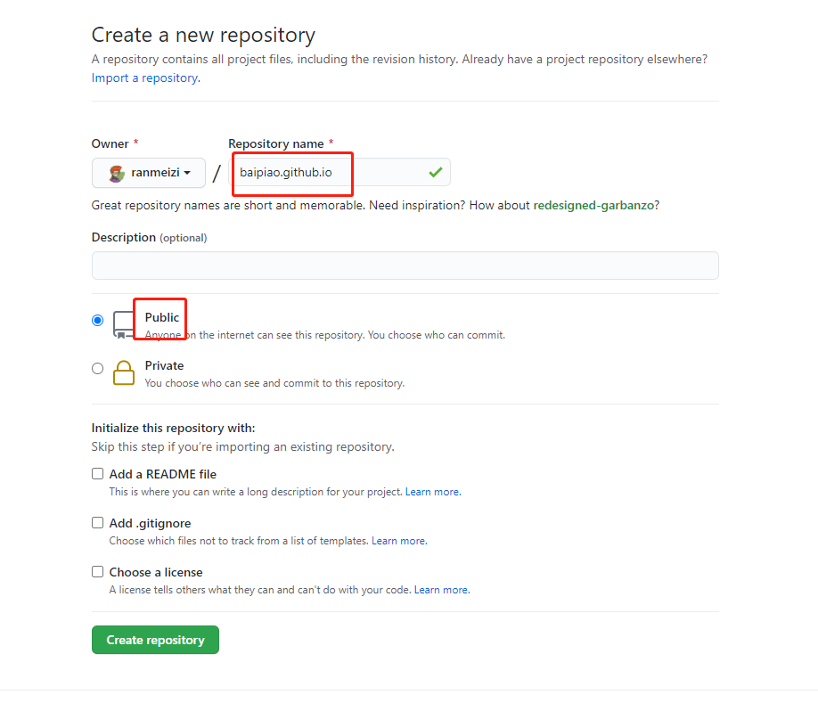
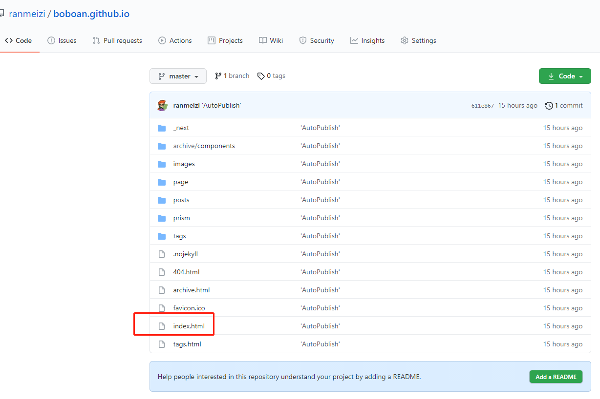
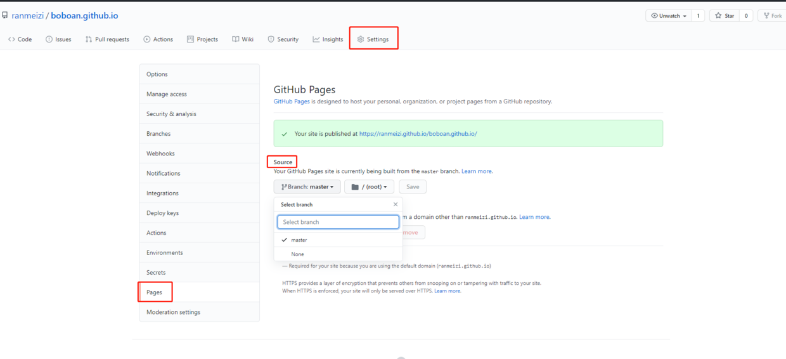

使用GitHub Page部署静态页面，以及.nojekyll的坑。。
github page是免费的服务，只要你把你的静态页面放到username.github.io命名的仓库，仓库就会有一个page功能，你可以在github.io上访问你的静态页面 很简单，只要几步就可以白嫖github page，不用自己买服务器拉 这是官方教程https://pages.github.com/，但没有提到.nojekyll的坑。。。
1.创建一个github.io仓库

要注意的是类型选public
名字要按username.github.io命名
2.推送你的静态页面到新建的仓库
我这是用nextjs构建的

注意根目录要有一个入口index.html 这还用说么
3.指定你哪个分支作为page页

4. .nojekyll文件
这个巨坑。。。我翻了半天文档才找见，github page默认你的页面使用jekyll构建的，如果没有.nojekyll文件会导致你请求静态资源404。所以如果你不是使用jekyll构建的，在提交前一定要把.nojekyll加入你的根目录